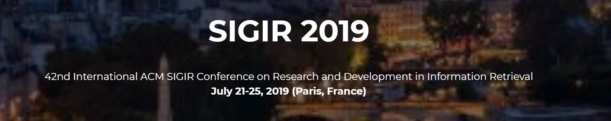

- Shuai Zhang, Yi Tay, Lina Yao, Bin Wu, and Aixin Sun, DeepRec: An Open-source Toolkit for Deep Learning based Recommendation.
- Kaixuan Chen, Lina Yao, Dalin Zhang, Bin Guo and Zhiwen Yu, Multi-agent Attentional Activity Recognition.
- Lei Bai, Lina Yao, Salil S. Kanhere, Xianzhi Wang and Quan Z. Sheng, STG2Seq: Spatial-temporal Graph to Sequence Model for Multi-step Passenger Demand Forecasting.
- Feng Yuan, Lina Yao and Boualem Benatallah, DARec: Deep Domain Adaptation for Cross-Domain Recommendation via Transferring Rating Patterns.
- Shuai Zhang, Lina Yao, Lucas Vinh Tran, Aston Zhang and Yi Tay, Quaternion Collaborative Filtering for Recommendation.

The 25th ACM SIGKDD Conference on Knowledge Discovery and Data Mining (KDD 2019), August 4 - 8, 2019, Anchorage, Alaska. (CORE Rank: A*)
- Xiang Zhang, Lina Yao and Feng Yuan. Adversarial Variational Embedding for Robust Semi-supervised Learning.

The 42nd International ACM SIGIR Conference on Research and Development in Information Retrieval (SIGIR 2019) July 21-25, 2019, Paris, France. (CORE Rank: A*)
- Feng Yuan, Lina Yao and Boualem Benatallah. Adversarial Collaborative Neural Network for Robust Recommendation

The 33rd AAAI Conference on Artifical Intelligence (AAAI-19), January 27 - February 1, 2019, Honolulu, Hawaii, USA. (CORE Rank: A*)
- Kaixuan Chen, Lina Yao, Dalin Zhang, Xiaojun Chang, Guodong Long and Sen Wang. Distributionally Robust Semi-supervised Learning for People-centric Sensing.
- Zhihui Li, Lina Yao, Xiaoqing Zhang, Xianzhi Wang, Salil. S. Kanhere and Huaxiang Zhang. Zero-Shot Object Detection with Textual Descriptions.
- Yi Tay, Shuai Zhang, Anh Tuan Luu, Siu Cheung Hui, Lina Yao and Vinh Tran. Holographic Factorization Machines for Recommendation.